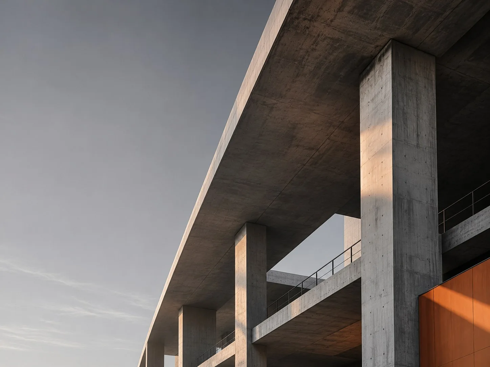

01 / ОСНОВНОЕ НАПРАВЛЕНИЕ
Строительно-техническая экспертиза
Исследуем состояние недвижимости, строительных конструкций и качество выполненных работ.
- Наличие и характер дефектов
- Возможные причины возникновения
- Техническое состояние конструкций
- Соответствие документации и проектным решениям
- Мероприятия по устранению недостатков
